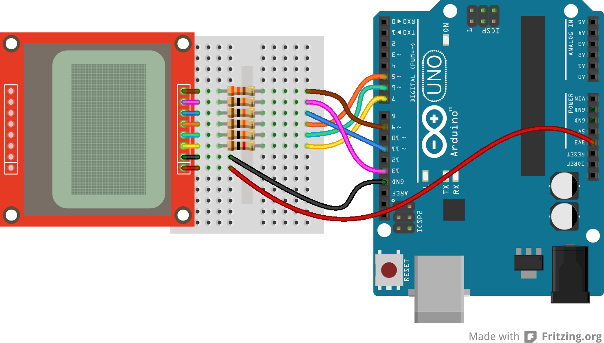
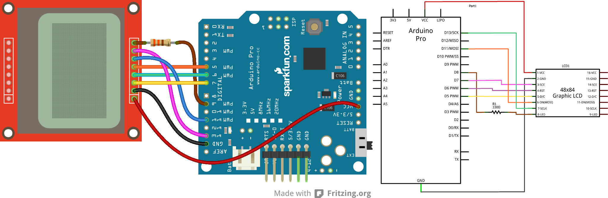

Apr 20, 2014
Nokia 5110 LCD with Arduino.
Not going to go too much into how this works, mainly because I’m not 100% sure myself.
Also not going to post a lot of code, because this device is very well documented. I will give links to Sparkfun and Adafruit, both with contain a lot of information about the LCD.
Sparkfun, only uses the SPI Library, which is interesting, you will see in the code alot of HEX, which is how the display gets its commands. From what I can tell, the screen is not true SPI - but it close enough that the SPI library doesn’t have a problem with it. I think Sparkfun contains more information, or at least better information about this device.
That being said, Adafruit developed a ready to use library - and from what I can tell they are making the display work a little different then how Sparkfun did it. The library does make it a little nicer as well, since you can just call what you need, there is still some HEX to do graphics, but it looks like that is if you are doing a custom graphic, standard things like lines and circles, squares are all handled by the library. There demo program is better as well, shows off more of what the display can do. So to sum up -
Sparkfun has better information, but Adafruit has a better library and program.
Here’s some links:
https://www.sparkfun.com/products/10168
https://learn.sparkfun.com/tutorials/graphic-lcd-hookup-guide/introduction
https://github.com/adafruit/Adafruit-PCD8544-Nokia-5110-LCD-library
Stolen (don’t say that too loud, but I think we are aloud to use them) from the Sparkfun site:
{width="6.5in" height="3.6944444444444446in"}
{width="6.5in" height="2.125in"}
just for Frank
http://www.partition-resize.com/resize-raid-partition/